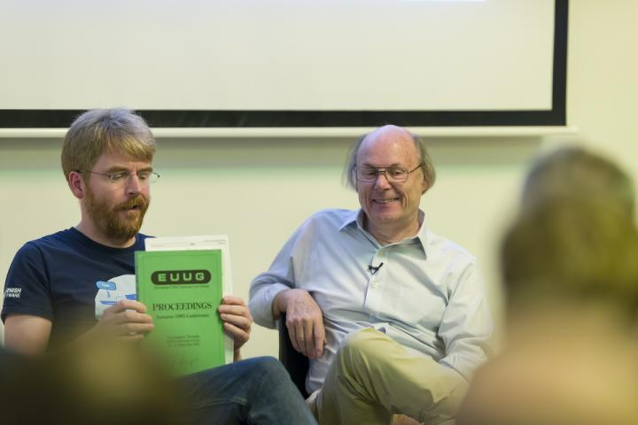

Trial&Error - Prototyping - Continous Integration¶
The other day I chatted to a friend who wrote his phd thesis with David Wheeler as his advisor, that made me feel young, because Wheeler was the guy who invented the subroutine.
No, not ‘a subroutine’ but ‘the subroutine’.
In the 1980’ies, right when I had started in IT, there was the new fashion: “Prototyping”.
It was all over the place, in 1983 Datamation you could about “Data driven prototyping”, and by 1990 it had bubbled up to management and Information and Software Technology could publish “Organization and Management of Systems Prototyping” etc. etc.
The grey-beard at my workplace laconically said “We already do that, only we call it Trial&Error.”
Programming has always been Trial&Error, and probably always will.
All the early pioneers, like Wheeler, complained about how batch-scheduling of machine resources removed the “intimate” contact with the running program and argued that it prolonged the debugging process.
Practically all the oral histories from back then are about people sneaking in to university or work at night, to get the computer for themselves.
But we could call it “Prototyping” if that sounded better, and now that the history-deficient dot-com generation has “invented” it, we can call it “Continous Integration”.
I don’t care - it’s still Trial&Error to me.
They guy I chatted with told how after his phd thesis he “swore to never again attempt to solve a problem with inadequate tools”.
That is sound advice, and we all tend to forget it all the time, so reminded, I did a mental inventory on the train home: Which tools do I use even though I find them inadequate.
And then I decided to do something about them.
First thing was my lab which has - erhh… evolved? - over the last 15 years.
Some of the original assumptions were plain wrong, and a lot of “As a temporary solution I can …” hacks became permanent, and so on.
I spent two days cleaning, moving, shuffling and generally tidying my lab, (Amongst other discoveries: The original two SCSI disks from the first “freefall.freebsd.org” machine built by Rod Grimes.) and it is now a lot more pleasant for the work I do these days.
Second thing was the Jenkins and Travis we use for Tria^H^H^H^Continuous Integration in the Varnish Project.
Jenkins and Travis are both general purpose program-test-framework-cloud-thingies, and they’re fine up to a point, but they are inadequate tools for me in too many ways.
Jenkins is written in Java, which is not something I want to inflict on computers volutarily, in particular not on computers people lend us to test varnish on.
Travis is Linux only, which is fine if you run Linux only, but I don’t.
But worst of all: Neither of them fully understand of our varnishtest tool, and therefore their failure reports are tedious and cumbersome to use.
So, taking my friends advice, I sat down and wrote VTEST, which consists of two small pieces of code: Tester and Reporter.
The tester is a small, 173 lines, portable and simple shell script which runs on the computer, physical or virtual, where we want to test Varnish.
It obviously needs the compilers and tools we require to compile Varnish, (autocrap, sphinx, graphviz) but it doesn’t anything beyond that, in particular it does not need a java runtime, a GUI or a hole in your firewall.
The tester sends a report to the project server with ssh(1), and the reporter, which is just 750 lines of python code, ingests and digests the report and spits out some pidgin HTML with the information I actually want to see.
And just like with the varnishtest program before it, once I had done it, my first thought was “Why didn’t I do that long time ago?”
So it is only fair to dedicate VTEST to the friend I chatted with:

Bjarne tried to model how to best distribute operating system kernels across a network, wrote a adequate programming language tool for the job, which was also an adequate tool for a lot of other programming jobs.
Thanks Bjarne!
Poul-Henning, 2016-11-21